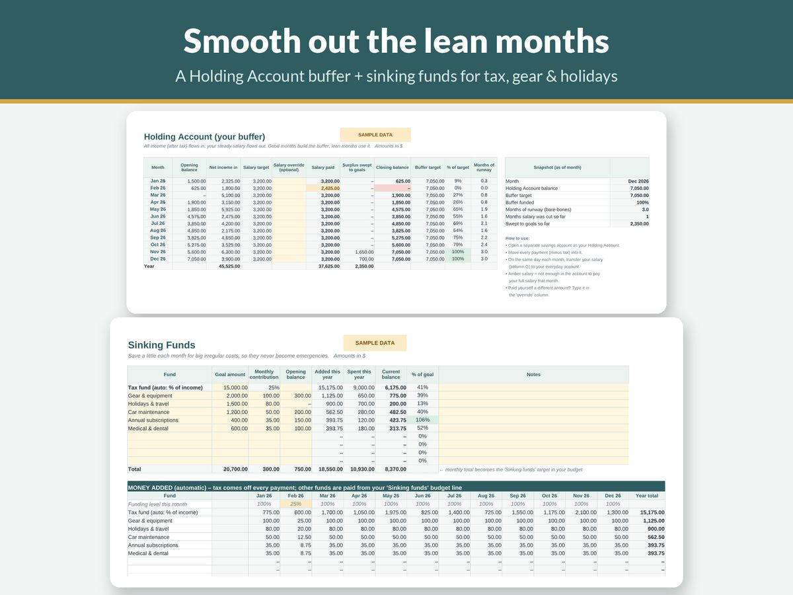

Sinking Funds Explained: How to Stop Big Bills Wrecking Your Budget

Most budgets don't fail because of the weekly grocery shop. They fail because of the car registration, the annual insurance bill, the dentist, the birthday month when three family members celebrate at once, or the festive season that arrives on the same date every year and still somehow feels like a surprise.
Sinking funds fix this. They're one of the simplest ideas in personal finance, and once you start using them, big predictable bills stop feeling like emergencies.
What is a sinking fund?
A sinking fund is money you set aside, a little at a time, for a specific cost you know is coming. Instead of finding 600 all at once when a bill arrives, you save 50 a month for twelve months. When the bill lands, the money is already sitting there.
The term comes from business and government finance, where a "sinking fund" is money put aside regularly to repay a debt or replace an asset. In household budgeting it means the same thing on a smaller scale: regular saving for a known future cost.
Sinking fund vs emergency fund
These two get confused, but they do different jobs:
- An emergency fund is for things you can't predict: losing your job, an urgent repair, a medical cost. You hope never to use it.
- A sinking fund is for things you can predict, even if the exact amount varies: annual bills, car servicing, gifts, holidays, replacing your phone. You fully expect to spend it.
Keeping them separate protects your emergency fund. If the annual insurance bill comes out of your emergency savings every year, you never really have an emergency fund at all.
The formula
For each sinking fund:
Monthly amount = (target amount − amount already saved) ÷ months until it's due
So for a 900 insurance renewal due in 9 months with nothing saved yet: 900 ÷ 9 = 100 a month.
If you get paid weekly or fortnightly, divide by the number of pay days instead of months. Starting late doesn't break the formula. It just makes the monthly amount bigger, which is a good reason to set up your sinking funds well before the bills are due.
Which sinking funds should you have?
Start by going through the last twelve months of bank statements and listing every cost that wasn't monthly. Common ones include:
- Car: registration, insurance, servicing, tyres, warrant or roadworthy checks
- Home: insurance, council or property rates, maintenance, appliance replacement
- Health: dental, optometrist, prescriptions, pet vet visits
- Gifts and celebrations: birthdays, the festive season, weddings you're invited to
- Travel and holidays
- Technology: replacing a phone or laptop, annual software subscriptions
- Kids: school fees, uniforms, activities, birthday parties
- Clothing
- Work costs if you're self-employed: equipment, professional fees, and tax if nobody withholds it from your pay
You don't need all of these at once. Pick the three to five that have caused you the most stress in the past and start there.
A worked example
Say it's January and you've identified five predictable costs for the year ahead:
| Sinking fund | Target | Due in | Monthly amount |
|---|---|---|---|
| Car insurance | 720 | 12 months | 60 |
| Car service and tyres | 480 | 8 months | 60 |
| Dental check-ups | 300 | 6 months | 50 |
| Festive season gifts | 600 | 12 months | 50 |
| Summer holiday | 1,200 | 10 months | 120 |
| Total | 3,300 | 340 |
Without sinking funds, this household faces 3,300 of "surprise" costs spread unevenly through the year, with some months hit by two or three at once. With sinking funds, it's a steady 340 a month: a normal line in the budget. These figures are only an illustration; use your own costs and timings.
If 340 a month isn't possible right now, that's useful to know. You can trim targets (a cheaper holiday), stretch the timing, or prioritise the funds where a missed bill would cause real damage, such as insurance.
Where to keep sinking fund money
There are a few common set-ups. All of them work; choose the one you'll actually maintain.
- One separate savings account for all sinking funds, with a simple tracker (paper or spreadsheet) showing how much of the balance belongs to each fund. This is the easiest to start with.
- Several savings accounts, one per fund. Some banks let you create multiple accounts or labelled "pots" for free. Seeing each balance separately can be very motivating.
- Cash envelopes for smaller, in-person spending like gifts. This only suits small amounts, and cash at home carries obvious risks.
Whichever you pick, keep sinking fund money out of your everyday account. If it's mixed in with your spending money, it tends to get spent.
Automating it helps. If you can set up an automatic transfer on pay day, the money is moved before you have a chance to miss it.
How to track your sinking funds
A sinking fund tracker needs just four things per fund:
- the name of the fund
- the target amount
- the due date
- the amount saved so far
From those you can see the progress as a percentage and whether you're on track. A progress bar or colour-in chart turns it into something genuinely satisfying to update.
When you spend from a fund, record it and start the next cycle. For recurring costs like annual insurance, the next target is usually similar to the last one, so you simply start again.
What if a bill is bigger than the fund?
It will happen. Prices change, and estimates are estimates. A few options:
- Cover the gap from your flexible spending that month, if it's small.
- Borrow from a less urgent sinking fund, then pay it back over the next few months. Write down that you've done it.
- Raise the target for next time. If the car service cost more than you saved, set a higher target for the next cycle.
Try not to dip into your emergency fund for something predictable. If you have to, make rebuilding it the first priority afterwards.
Sinking funds on a tight budget
When money is tight, putting money aside for bills months away can feel impossible. But this is where sinking funds help most, because without them an annual bill can push people into overdrafts, late fees or high-interest borrowing.
Start small. Even a modest amount each pay into one fund for your most stressful bill is progress. As other costs come down or income goes up, add more funds. Our guide on how to budget on a low income has more ideas for making a tight budget work.
Sinking funds with irregular income
If you're self-employed or your income varies, sinking funds matter even more, because a lumpy expense arriving in a quiet month is doubly painful. Treat your tax set-aside as your most important sinking fund. The full method is in our guide on how to budget on an irregular income.
Common mistakes
- Too many funds at once. Fifteen funds you can't fill is discouraging. Start with a handful.
- Forgetting to update the targets. Costs rise. Review once or twice a year.
- Leaving the money in your spending account. Separate it.
- Raiding sinking funds for wants. Once the holiday fund pays for a new gadget, the system stops working. Give wants their own fund if you need one.
- Not counting them in your budget. Sinking fund contributions are a real monthly expense. Put them in your budget alongside rent and groceries.
Tools that help
You can run sinking funds on the back of an envelope, but a tracker makes the progress visible.
Our Irregular Income Budget Tracker includes a sinking funds tab with targets, due dates and progress, alongside a buffer and runway tracker, in Excel or Google Sheets. It's available on Gumroad. If you prefer paper, the Printable Budget Planner includes a sinking funds page with six funds, goals, save-by dates and progress bars, plus a savings tracker and an annual bills calendar that makes it easy to spot every lumpy cost in the year.
The short version
- List every predictable non-monthly cost from the last year.
- Pick the three to five most important.
- For each one, divide the target by the months until it's due.
- Move that amount to a separate account every pay day.
- Track each fund's progress, and spend from it only for its purpose.
- Review targets once or twice a year.
Big bills will keep coming. With sinking funds, they stop being surprises.
This guide is general information, not financial advice.

Get the free 2027 Money Reset Starter
A one-page budget starter and a 12-week mini savings challenge, for Excel, Google Sheets or print. Free: just type 0 at checkout.
You'll also get a few short, useful emails from JulesSheets (tips and the odd offer). Unsubscribe with one click, any time. Privacy.
More guides
- How to Set Up a 2027 Budget in 15 Minutes
- The 100 Envelope Challenge: How It Works and a Free Tracker Plan
- A Simple Budget Template for Beginners (and How to Fill It In)
- How to Budget on an Irregular Income (A Step-by-Step Method)
- Zero-Based Budgeting Step by Step: Give Every Dollar a Job
- How to Budget on a Low Income: A Practical, Judgement-Free Guide
- Debt Snowball vs Avalanche: Which Is Better? (With a Worked Example)
- Small Business Bookkeeping for Beginners: A Simple System for Freelancers and Sole Traders
- Wedding Budget Breakdown by Category: A Practical Starting Split
- How Much Does a Baby Cost in the First Year? How to Estimate and Plan for It
- How Much to Spend on Christmas per Child (and How to Set a Christmas Budget)
- How to Set Up a 2027 Planner You'll Actually Use
- How to Write a Resume With No Experience (With Examples)